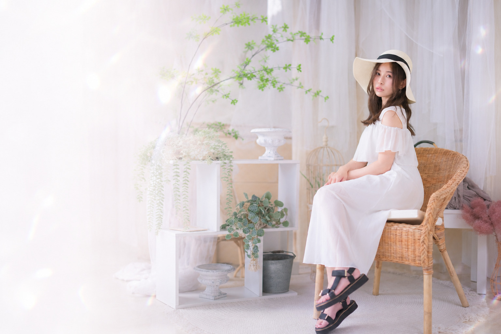

ABOUT
こゆき
-KOYUKI-愛知県を拠点に活動するマルチクリエイター。 モデル・ライブ配信・イベント出演など、 ジャンルにとらわれず、さまざまな活動を通して 自分らしい表現を発信しています。
WORKS
活動経歴
Model撮影・展示・作品撮り
Live StreamerTikTok LIVE・FANME
Otherイベント・出演
-
10月
モデル活動開始 Model
被写体モデルとして活動をスタート。
-
2月
TikTok LIVE 配信開始 Live Streamer
ライブ配信活動をスタート。
-
4月
COLORS Jr. 展示モデル Model
展示作品のモデルとして参加。
-
10月
REAL PORTRAIT 展示モデル Model
REAL PORTRAIT展示作品のモデルとして参加。
-
10月
TikTok Live 事務所ランキング5位 Live Streamer
所属事務所内のランキングで5位を獲得。
-
11月
TikTok Live 事務所ランキング1位 Live Streamer
所属事務所内のランキングで1位を獲得。
-
1月
TikTok Live日間ランキング75位 Live Streamer
TikTok LIVEの日間ランキングに75位にランクイン。
-
4月
TikTok Live 一致団結チャレンジ 総合4位 Live Streamer
「一致団結チャレンジ」で総合4位を獲得。
-
9月
REAL PORTRAIT 展示モデル Model
REAL PORTRAIT展示作品のモデルとして参加。
-
1月
地元イベント出演＆誕生日オフ会開催 Other
ファンとの交流イベントを開催。
-
2月
FANME バレンタインイベント Live Streamer
総合4位・ルーキー1位を獲得。
-
4月
OK boomer 展示モデル Model
展示作品のモデルとして参加。
-
4月
さくひん魂 展示モデル Model
展示作品のモデルとして参加。
-
7月
MID-FM761「しおりが紐解くDEEPな世界」ゲスト出演 Other
ラジオ番組にゲスト出演。
GALLERY
Portfolio
FOLLOW ME
SNS
CONTACT
お仕事のご依頼
お仕事のご依頼
お問い合わせ
撮影・出演・イベント・コラボ・その他のご依頼を受け付けております。
下記フォームよりお気軽にご連絡ください。